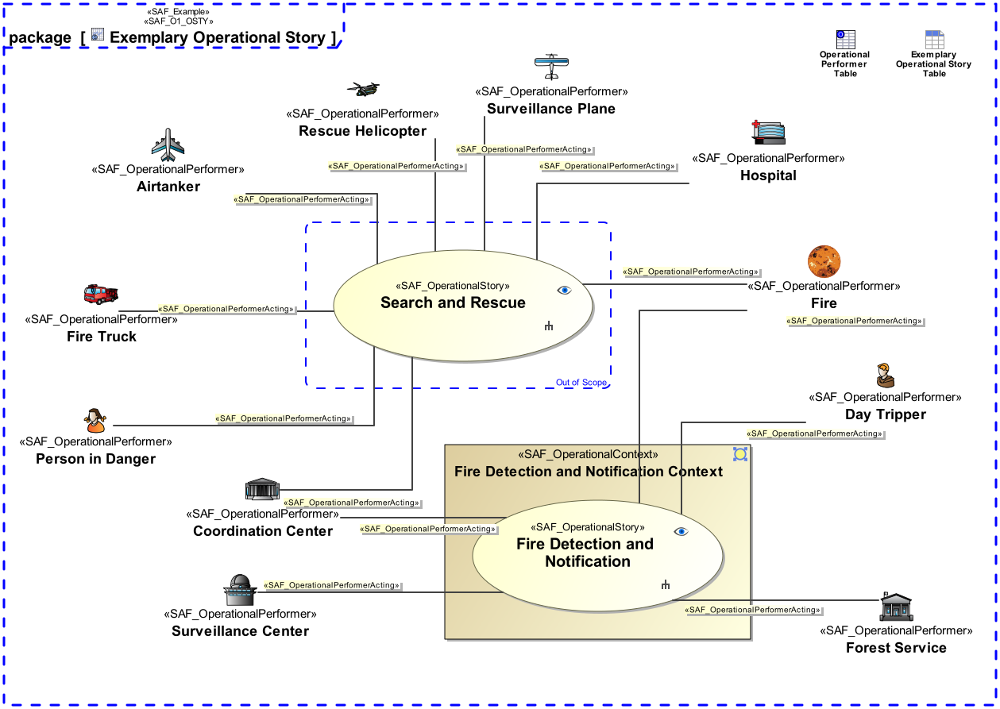

O1_OSTY Operational Story Viewpoint
| Domain | Aspect | Maturity |
|---|---|---|
| Operational | Context & Exchange |

The Operational Story Viewpoint
The Operational Story Viewpoint supports the “Business or Mission Analysis Process” activities of the INCOSE SYSTEMS ENGINEERING HANDBOOK 2023 [§2.3.5.1] and contributes to the problem or opportunity statement.
A use case diagram featuring model elements representing operational stories, the context in they’re taking place and operational performers involved. Note: Illustrations, drawings, sketches, etc., and/or descriptions in free text may provide a comprehensive understanding of the operational mission.
The following Stereotypes / Model Elements are used in the Viewpoint: